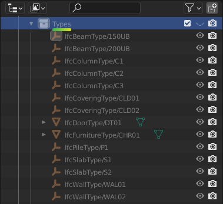
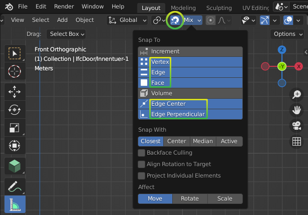

Exploring an IFC model¶
We’re going to load an existing IFC model and explore some common properties most users will be interested in.
If you don’t have an IFC model available, here’s a small one for your convenience provided by the Institute for Automation and Applied Informatics (IAI) / Karlsruhe Institute of Technology. It’s in German, so you may need to use some creativity when reading the data :)
See also
You can find more sample models online in the OSArch Open Data Directory
Loading a model¶
Bonsai’s interface is divided into three panels. The left panel shows geometric objects. The centre main panel shows 3D geometry. The right panel shows data and relationships.
The panel has tabs to switch between different types of properties.

Go to , click Open IFC Project, and browse
to your .ifc file.
After loading, you will see the model appear in the .
Take a look at the panel. It shows the loaded filename, as well as the IFC Schema. There are two commonly seen IFC Schema versions: IFC2X3 and IFC4. Checking the IFC Schema is important because it has an impact on what BIM data may be stored. IFC4 is the newer version and it is recommended to use IFC4 models as it has significantly more BIM capabilities compared to IFC2X3.
Tip
Blender’s interface is highly customisable. Panels, panel types, colours, sizes, and tabs may be edited to suit your workflow. If you want a Hot Pink theme look no further.
Navigating a model in 3D¶
To navigate, can use the Navigate Gizmo on the top right corner of the . Click and drag on the coloured axes to Orbit, click and drag on the magnifying glass to Zoom, and click and drag on the hand icon to Pan. You can also click on the grid icon to switch between perspective and orthographic view.
To switch to a top view, front view, or side view, click the relevant axis on the Navigate Gizmo.
You can also use your mouse to navigate. Hover your mouse over the Viewport panel and click and drag the Middle Mouse Button (MMB) to Orbit. Scroll the mousewheel to Zoom, and use Shift-MMB to Pan.
If you have a numpad, you can use the numpad keys to quickly switch to top, front, or side view. Use 7 for top view, 1 for front view, and 3 for side view.
Warning
Blender’s hotkeys are context sensitive. This means that a hotkey has a different meaning depending on the panel your mouse cursor is hovering over. If you press 7 to go to top view, make sure your mouse cursor is over the . Be very careful where your mouse is, or you might press a hotkey and it will have unintended consequences!
If you click on an object, such as a wall in the , you can zoom to the selected object by clicking on then Frame Selected. The hotkey is the . button on the numpad. After zooming into an element, when you Orbit the 3D view will rotate around the center of that element.
You can also zoom to all objects in the project by clicking on then Frame All.

Another good way to navigate is by flying or walking around similar to a video game. Click on , then you can press Shift-W to activate Walk Mode. Use the WASD keys and the mouse to move around like a video game. You can use the Shift key to switch between moving fast and slow. If you scroll with the mousewheel, it will adjust the speed that you move at.
Sometimes, you want to look through objects. You can toggle X-Ray Mode by pressing the button on the top right of the Viewport panel. The hotkey is Alt-Z.
Tip
Blender has lots of hotkeys to do things quickly. These can take time to learn but it is worth it as you will be much faster. These hotkeys can be customised in Blender’s preferences.
Overview of all objects¶
All physical Elements are organised in a hierarchy of Spatial Containers. By default, this hierarchy represents a breakdown of spaces, from large spaces such as a site and a building, down to smaller spaces like building storeys and room spaces. The hierarchy will always begin with an IfcProject.
The panel shows this hierarchy. Below, it shows a list of all Elements contained inside the actively selected Spatial Container.
With a Spatial Container selected, use the Isolate button or Hide / Show Icons to quickly focus or control visibility. Use the search filters at the bottom of the Container or Element lists to quickly find objects, and use the Select Icon to select them.
Elements are grouped into IFC Classes, such as Wall, Slab, or Door. Within that, Elements are grouped into Construction Types. You’ll see a count of how many objects of that type exist. In the example above, there is only one stair contained in the building storey.
Tip
Hold Alt when clicking on triangles in the hierarchy to show / hide children recursively.
Viewing element classes¶
Usually the first thing you’ll want to check is the Class of element that an object represents. The IFC Class is an international classification system provided by IFC. Example IFC Classes are Wall, Slab, and Door. Every IFC element must have a Class.
Classes aren’t just for categorising elements. They also indicate what types of properties and relationships it is allowed to have. For example, a Wall Class can have a fire rating property, but a Grid Class cannot.
Note
There are hundreds of Classes to represent all aspects of our built environment, including non geometric classes like Task, Occupant, and CostItem. However, we’ll focus only on simple physical Classes in this guide. Don’t worry about memorising all the available Classes, you’ll get a feel for them as you explore more.
To view an object’s class, click on an object in the , then go to to see the Class name.
In this case, the Class of our roof is an IfcSlab. You can also see the name of the actively selected object in the top left of the .
Warning
Sometimes, an IFC model will use the wrong Class. For example, a chair might be assigned as the Wall Class instead the Furniture Class. There is a special class known as IfcBuildingElementProxy, used when the user is unable to find a more semantic Class. If you see many IfcBuildingElementProxy Classes, it is likely a symptom of a low quality IFC model. If this is the case, scold the project manager and ask them to do a better job.
After IfcSlab it also says ROOF. This is known as the Predefined Type of the element. You can think of it as a further level of classification. In this case, it distinguishes our object as a roof slab, compared to other types of slabs. The Predefined Type is optional so you may not see it all the time.
See also
You can use the Search IFC Class tool to learn the correct classes and predefined types you should see.
Press the Select Icon to select all objects that are of the same IfcSlab Class. Then, you can isolate these elements by going to (Shift-H). To show all elements again, you can use (Alt-H). If you want to hide elements instead, you can use (H).
Note
Remember that Blender’s hotkeys are context sensitive. Make sure your mouse is hovering over the panel when you press a hotkey or no cake for you.
You can also see statistics about the number of selected objects. If you right click on the bottom right and enable Scene Statistics you will see information like Objects 4/4, which means that 4 objects are selected out of 4 available objects. This is a great way of counting objects like toilets.
Viewing attributes and properties¶
You can view the Attributes, Properties, and Quantities of the selected object in the tab.
Let’s focus on Attributes first. Scroll down to the Attributes subpanel. Attributes are a limited set of fundamental data (usually less than 10) associated with all IFC elements. These are fixed by the IFC standard.

Here are some common attributes and what they mean:
GlobalId: a unique ID for the element useful for computer geeks
Name: a short name, code, number, or label to identify the object for a human. If you had to annotate the object on a drawing or a schedule, the Name is what you should see. For example, a pump Name might be
P-10-A.Description: typically the longer form of the name, written to be descriptive and readable for humans. For example a pump Description might be
Water Suction Pump.Tag: this is an ID that may link it back to another BIM application. For example if the IFC model was produced using Revit or ArchiCAD, it might hold the Revit or ArchiCAD element ID.
Predefined Type: A further level of classification to be read in conjunction with the IFC class.
Warning
Some IFC models have poor quality data. For example, if the Name
of a Window doesn’t match the window code (e.g. W01) you see on a
drawing, the project manager has clearly not put enough effort. Shame on
them.
Properties are other data associated with the object. Every project will have different Properties depending on what information they want to store. Each Property has a name and a value, and are grouped into Property Sets. Each Property Set also has a name.
You can find Properties in the panel.
Some very common Properties are standardised by international BIM standards.
For example, the load bearing Property of a beam should always be called
LoadBearing. If a Property Set is part of the international standard, it
has a prefix of Pset_, like Pset_BeamCommon.
If you see a Property Set without the Pset_ prefix, it is a custom
property defined by the author of the IFC model.
Tip
It’s important to distinguish between Properties that are
part of the standard compared to custom ones. When Properties are
standardised, it makes it easy to manage data. So if you need to isolate all
LoadBearing elements, you now know exactly where to look.
Quantities are very similar to properties. They also have a name and a
value, and are grouped into Quantity Sets. Similarly, there are also common
quantities defined as part of the international standard, denoted by the prefix
Qto_. This prefix is short for “Quantity Take-Off”.
You can find Quantities in the panel.
Finding the location of objects¶
Every object in the built environment has a location in the world. For example, a chair will be located in a space, and a wall is typically located in a building storey. You’ve already seen this hierarchy of spaces in the panel, where an IFC project is broken down into site, building, storeys, and spaces.
Sometimes, objects may have multiple relevant locations, such as a multi-storey column which can be related to multiple building storeys. Even in these cases, IFC enforces one location to be its primary location, known as its Spatial Container.
If you click on any object, you can see its location in the panel.
Press the Select Icon to select all objects that are in the same location.
Checking construction types¶
Almost everything in the built environment will have a Construction Type. For example, an architect will specify a door type for every door in a project.
You can see a list of Construction Types in the
in the Types collection. For example, if the architect has a wall types
schedule with the wall type names of WT01, WT02, and WT03, you
should see three IfcWallType objects with those same names in the
Outliner.
You can click on these types to see more details about them in the panel.
When selecting an object, you can also see its construction type in . You can press the Select Icon to select all objects that are of the same Construction Type. You can use the hide and isolate hotkeys to quickly view them in the model.
A Construction Type defines properties that are common to all occurrences of that type. For example, if a wall type specifies a fire rating property, then all walls of that wall type will inherit that fire rating too.
A Construction Type may also specify geometry or geometric rules that are common to all occurrences of the type. For example, a pump type will define the geometry of the pump, so all occurrences of that pump will have the same geometry.
You can visually inspect types in isolation to the rest of the model. Types are hidden by default, so first enable the visibility of the Types collection in the Outliner by pressing the Visibility Icon. Then, select a type, and click on (/). Toggle the view to see the entire model again.

Note
Only Construction Types where the geometry is exactly the same for all occurrences will specify geometry. When the geometry varies based on the occurrence (such as a wall, which varies based on the wall length), the Construction Type will typically have no geometry.
Filtering by materials¶
Everything in the built environment is made from a physical raw Material resources. For example, a Material might be blockwork. Another Material might be in-situ concrete. Materials are grouped into categories like steel, concrete, brick, block, and so on.
We can see a list of Materials used in the project in the panel.
Press the Select Icon to select all objects that are of the selected material.
Taking simple measurements¶
The simplest form of measurement is the one that’s already taken for you. The Viewing attributes and properties section describes how to view pre-calculated Quantities.
Sometimes, you may wish to take manual measurements yourself. You can view the overall X, Y, and Z dimensions of the currently selected object in the panel.
Another way to manually measure from two points is to use the Measure tool. First, press the Snap Icon to enable snapping. Then choose snap targets in the Snap Menu in the top middle section of the .
Tip
It is recommended to choose multiple snap targets, like Vertex, Edge, and
Face, and Edge Center. You can use the Shift key to select
multiple snap targets. For example, the Face snap target means that your
measurements will automatically snap to the nearest object’s surface.
Now that you have configured snapping, press the Measure Tool Icon on the
left of the . Click and Drag in the 3D
viewport to take a measurement. A circle will appear guiding the first point of
your measurement. While Dragging, press the X key to lock the
measurement line along the X axis. Alternatively, press the Y or Z key
to lock the measurement line along the Y or Z axis. Let go of the mouse to
finish your measurement.
To delete a measurement, just click on one point of the measurement, and press
the Delete key. You can also click and drag the ends of your measurement
lines to measure to another location.
What else is there?¶
Congratulations, and welcome to the digital built environment!
We’ve barely scratched the surface of the data and relationships available in an IFC model. We’ve yet to cover documents and drawings, clearance zones, tasks, cost items, structural loads and forces, analytical models, distribution system connectivity, energy analysis, rendering textures, and so much more. Our built environment and its relationships are vast and complex and it is exciting that you can join us on its digital journey!
Please do not hesitate to reach out with any questions.